
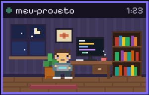
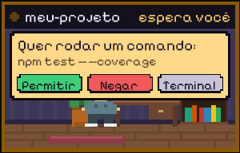
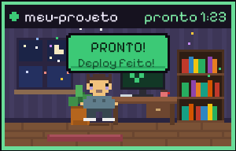

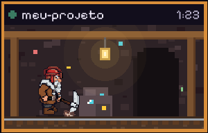

Anões mineiros
Picam pedra, empurram o carrinho e carregam o saco. Cinco cores de capacete e barba.
Enquanto o Claude Code resolve o seu código, uma equipe de bichinhos em pixel art trabalha junto: em cima do terminal ou numa salinha no canto da tela, uma por terminal. Quando ele termina, eles comemoram e avisam. Se ele precisar de você, eles chamam.
Modo Salas
Cada sessão do Claude Code ganha uma salinha temática ali perto do relógio, com o agente trabalhando dentro. Dá para ver todos os terminais de uma vez, sem atrapalhar o que você está fazendo.



Quando o Claude pede para rodar um comando ou mexer num arquivo, a sala mostra o pedido com Permitir, Negar e Terminal. A pergunta também continua no terminal: responda onde preferir.
Duplo clique numa sala traz o terminal dela para a frente. Com vários Claudes abertos, é o jeito mais rápido de achar quem terminou.
Um som quando termina, outro quando precisa de você e outro quando algo falha. Cada um liga e desliga separado.
Salas menores ou maiores, no canto direito ou esquerdo, ou arrastadas para onde preferir. Elas lembram o lugar.
Modo Equipe
Escolha quem vai trabalhar hoje. Repare no spinner: ele passa a usar as frases da equipe. Dá para usar os dois modos juntos.
Simulação feita com os mesmos desenhos do programa. No seu computador eles ficam em cima da janela do terminal e seguem a janela quando você a arrasta.
A equipe
Todos estes vêm de graça. Cada equipe tem seu trabalho, suas manias e várias cores. Dá até para misturar todo mundo.
Supporters Pack
Um pacote de personagens de fantasia e RPG em alta definição, desenhados quadro a quadro, com mais animações e mais detalhe. O CmdCrew continua grátis e aberto: o pack é para quem quer apoiar e ganhar uma equipe caprichada em troca.

Picam pedra, empurram o carrinho e carregam o saco. Cinco cores de capacete e barba.

Regam, cavam e rastelam enquanto o Claude trabalha. Cinco cores de gorro.

No modo Salas, o anão HD assume a mina: lamparina tremendo, trilho, carrinho e pedras brilhando.
Elfos arqueiros, dragão de verdade, magos, cavaleiros e outros heróis de RPG entram no pack conforme ficam prontos.
O pack chega como um arquivo .zip. No CmdCrew, abra a configuração e clique em Adicionar pacote.
Como funciona
Na hora que você aperta Enter no Claude Code, a equipe é chamada: entra em cima do terminal ou abre a sala daquele terminal.
Martelam, cavam, digitam, carregam coisas e comentam o seu código em balõezinhos. Se o Claude pedir permissão, eles chamam você.
Eles comemoram, tocam um plim e vão embora. Até o próximo prompt.
As janelas não roubam o foco. A equipe em cima do terminal deixa os cliques passarem; as salas só respondem aos botões e ao duplo clique.
O "Thinking…" do Claude Code vira "Picando pedra…", "Regando as dependências…" e por aí vai. Tudo editável.
Cada terminal tem a sua sala. No modo Equipe, eles só vão embora quando o último Claude terminar.
Curiosidade
O plim de "pronto", o chamado de "precisa de você" e o tombo de "deu erro" não vieram de banco de sons: foram sintetizados no SFX Forge, outro projeto da casa, que gera efeitos sonoros de jogos a partir da intenção.
Download
Baixe o instalador, escolha seus personagens e onde eles aparecem. Na próxima vez que o Claude Code trabalhar, eles chegam.
Baixar para WindowsWindows 10 ou 11 · precisa do Claude Code instalado · não precisa de nada além disso · código no GitHub
CmdCrew-Setup.exePerguntas
Não. Nenhuma janela rouba o foco. A equipe em cima do terminal deixa os cliques passarem; as salas ficam num canto e só respondem aos botões e ao duplo clique. Tudo só aparece enquanto o Claude Code está trabalhando.
Quando o Claude Code precisa de permissão, ele chama o CmdCrew (pelo gancho PermissionRequest) e a sala mostra o pedido. Permitir e Negar respondem direto ao Claude; Terminal devolve a decisão para o terminal. A pergunta de sempre continua aparecendo no terminal também, então dá para responder lá se preferir. Isso pode ser desligado na configuração.
Não. Tudo roda no seu computador: sem conta, sem telemetria, sem servidor. O programa só conversa com o próprio Claude Code, pelos ganchos (hooks) que ele oferece.
Pode e deve: o CmdCrew é de código aberto (licença MIT). Dá até para compilar você mesmo com o instalar.cmd do repositório, usando só o compilador que já vem no Windows.
Adiciona ganchos de início, fim, permissão e avisos e, se você quiser, troca as frases do spinner. Antes da primeira alteração é feito um backup do seu settings.json.
Um pacote de personagens medievais e de RPG em alta definição, com animações melhores, para quem quiser apoiar o projeto. O programa e os personagens normais continuam grátis.
O Claude Code não avisa quando é interrompido, então a equipe percebe sozinha: depois de alguns minutos sem atividade, eles vão embora.
Abra o CmdCrew pelo menu Iniciar: é a tela de configuração. Lá dá para trocar a equipe, desligar sem desinstalar ou, no cantinho, desinstalar. Também dá para desinstalar por "Aplicativos instalados" do Windows. Ele tira os ganchos e devolve as frases originais do spinner.